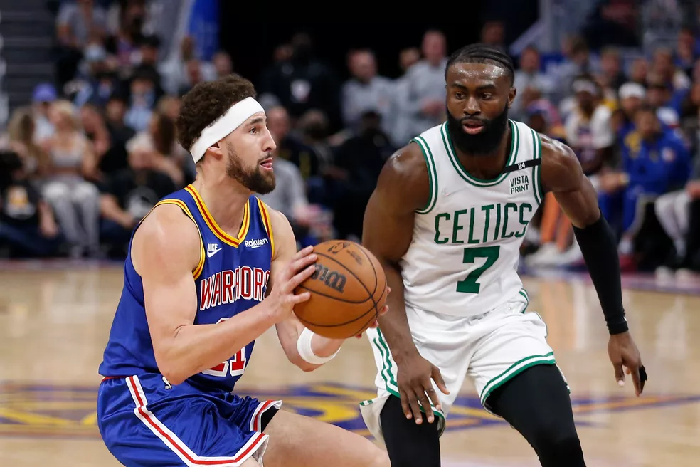

O que esperar da final entre Boston Celtics X Golden State Warriors
Série decisiva começa na quinta-feira, 2 de junho; possível jogo 7 acontece no dia 19
Os Warriors disputam a sexta final em oito anos, e podem chegar ao quarto título nesta sequência. A gloriosa geração dos Splash Brothers ganhou os reforços de Andrew Wiggins e Jordan Poole, que jogam sua primeira decisão.
Do outro lado, os Celtics passaram, finalmente, pela barreira da final do Leste - foram três tentativas frustradas nos últimos cinco anos. Os astros Jayson Tatum e Jaylen Brown têm a companhia do melhor defensor do ano, Marcus Smart. A franquia pode chegar ao 18º título de sua história e se isolar como maior vencedora novamente.
Ultimas Noticias

Luka Doncic comanda vitória dos Mavericks

Celtics arrasam Miami Heat e empatam final do Leste

Nikola Jokic é eleito o MVP da temporada da NBA